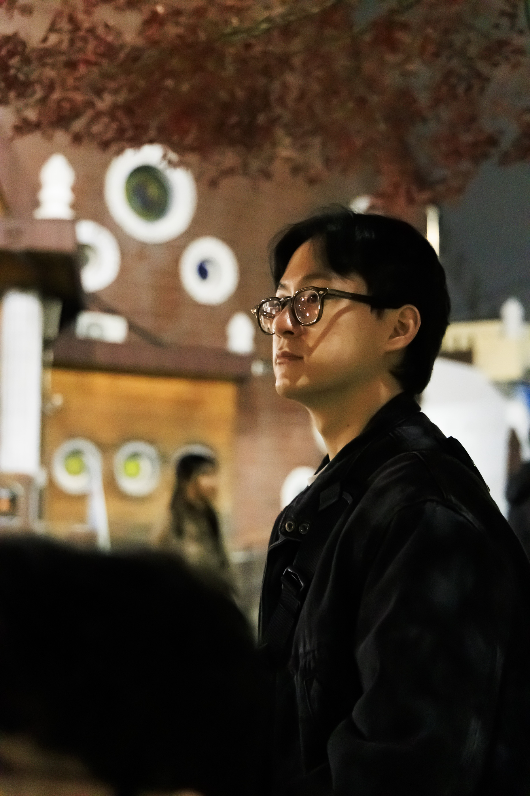
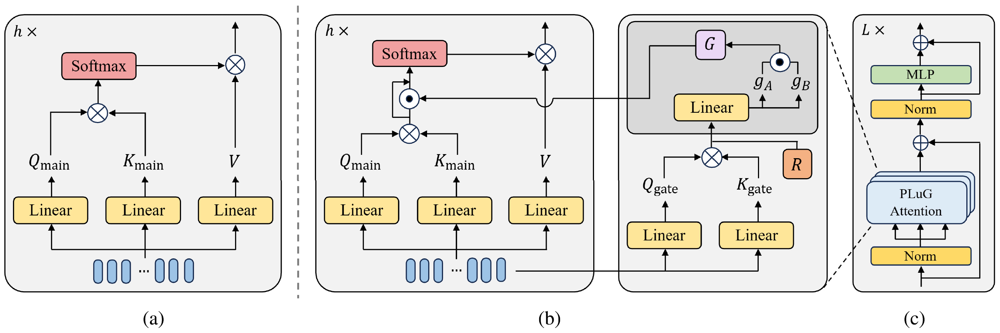
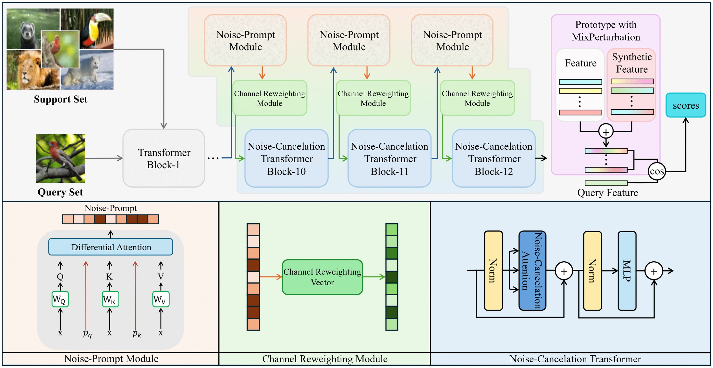
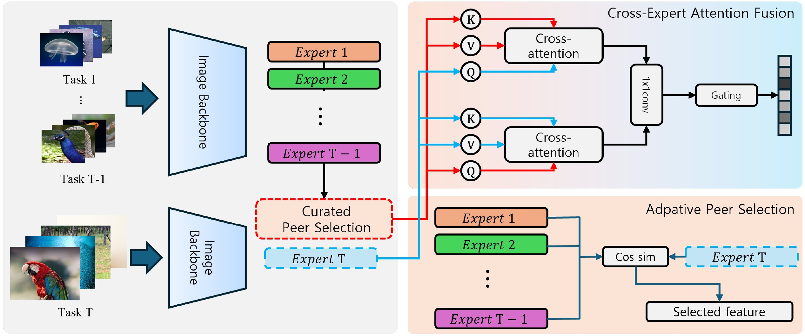
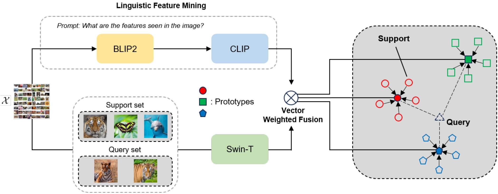
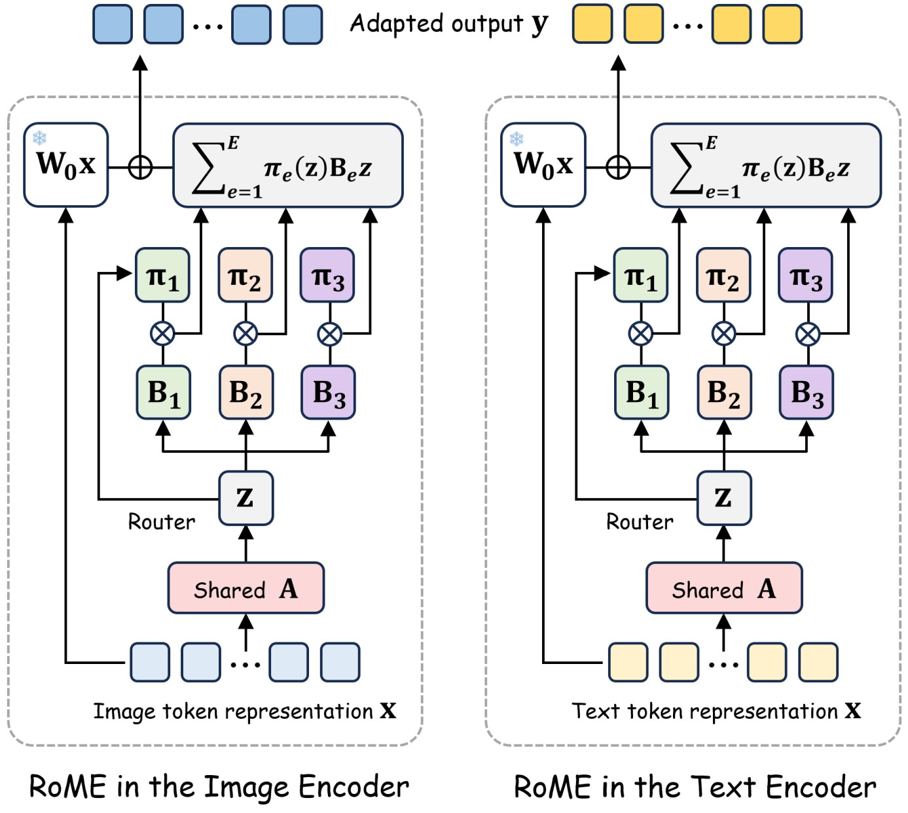
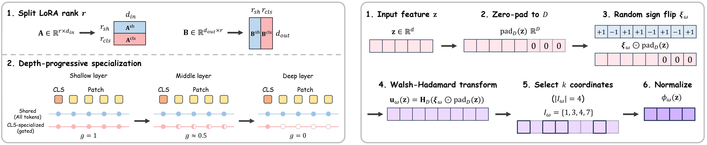
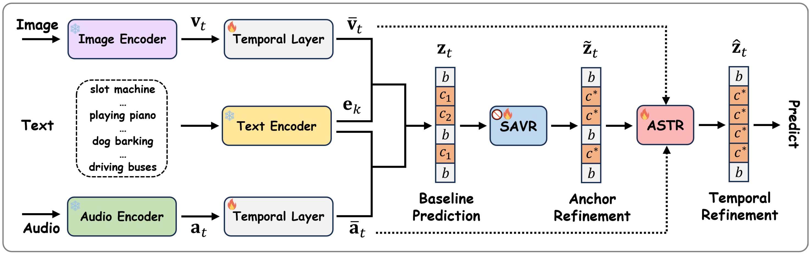
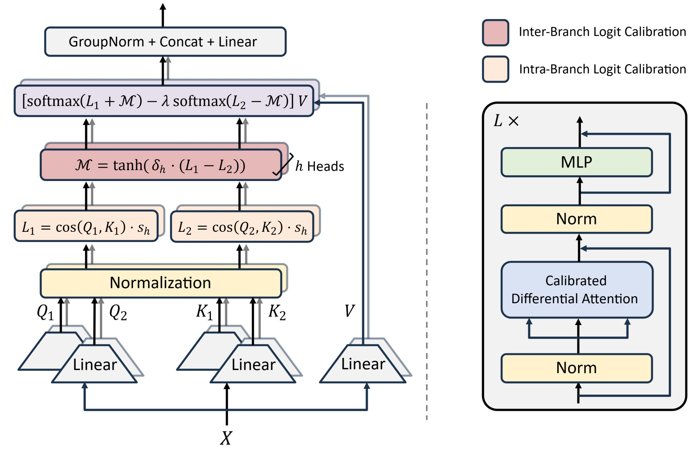

Dongheon Lee
xlfkshrex@gmail.com
Hello. I’m Dongheon Lee. I received my M.S. degree in Artificial Intelligence from Chung-Ang University, where I was advised by Prof. Joonki Paik.
I am an AI researcher interested in computer vision, vision-language models, and data-efficient learning. My research focuses on developing models that can learn from limited data, adapt to new classes and environments, and generalize reliably beyond their training distributions.
My current research interests include few-shot learning, incremental learning, vision-language model adaptation, multimodal learning, and attention mechanisms for visual recognition.
Education
Publications




Ongoing Works



